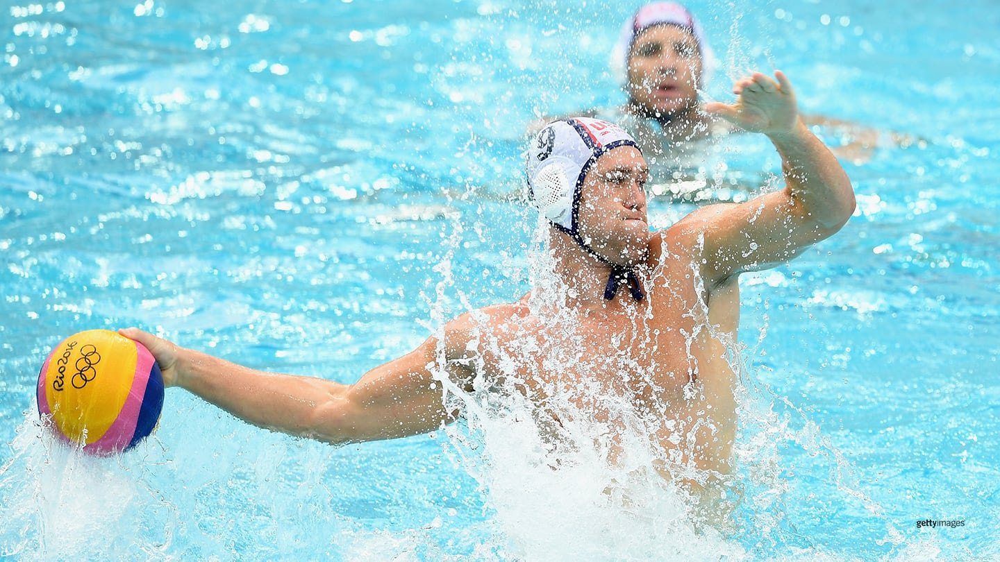
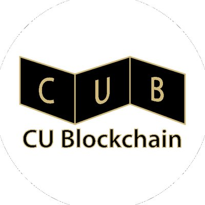

Grigory Shatalin
Software Engineer
Extracurricular Highlights

I've been playing competitive water polo since high school, and it remains one of the most demanding and rewarding parts of my life outside of engineering. Water polo is a sport that tests nearly every physical and mental faculty simultaneously — endurance, coordination, spatial awareness, and real-time team communication under pressure. Playing in competitive leagues has instilled a level of discipline and grit that translates directly into how I approach difficult engineering problems: methodically, collaboratively, and without giving up when things get hard. The sport has also given me a tight-knit community of teammates who push me to stay sharp, both in and out of the pool.

As an active member and co-organizer of a university crypto club, I helped build a space for students to engage seriously with blockchain technology, decentralized finance, and the evolving regulatory landscape around digital assets. We hosted weekly sessions covering everything from smart contract development and token economics to the geopolitics of stablecoins and the ethics of decentralization. This involvement gave me a grounding in the theoretical and practical dimensions of crypto that goes well beyond the speculative surface — and it directly informed the work I now do professionally at Circle and with ARC on-chain. The club was where I first started connecting abstract protocol design to real-world financial use cases.

Hackathons have been one of the most formative parts of my development as an engineer. I've participated in multiple events ranging from focused 24-hour sprints to multi-day competitions spanning AI, fintech, and Web3 verticals. Each hackathon is a crash course in the full product lifecycle: scoping an idea under time pressure, building a working prototype, and pitching it coherently to judges. Several early concepts explored during these events — including the original idea behind BuffAI — grew into longer-term projects. Beyond the output, hackathons consistently connect me with other builders who think differently than I do, which is often where the most interesting conversations happen. I keep coming back because the compressed intensity accelerates learning in ways that normal project timelines simply don't.

Travel is one of the most reliable ways I've found to challenge my assumptions — about technology, culture, and what people actually need from the systems that serve them. I've spent time across countries in Europe, Asia, and the Americas, and in each place I've noticed something different about how financial infrastructure, internet access, and digital tooling shape daily life. In some regions, mobile payments have leapfrogged credit cards entirely. In others, cash is still king, and banking is deeply inaccessible. These experiences have given me a concrete sense of why the work I do on stablecoins and open financial protocols matters beyond the tech bubble — and have made me a more empathetic engineer overall. Travel keeps my perspective wide when the work can make it narrow.